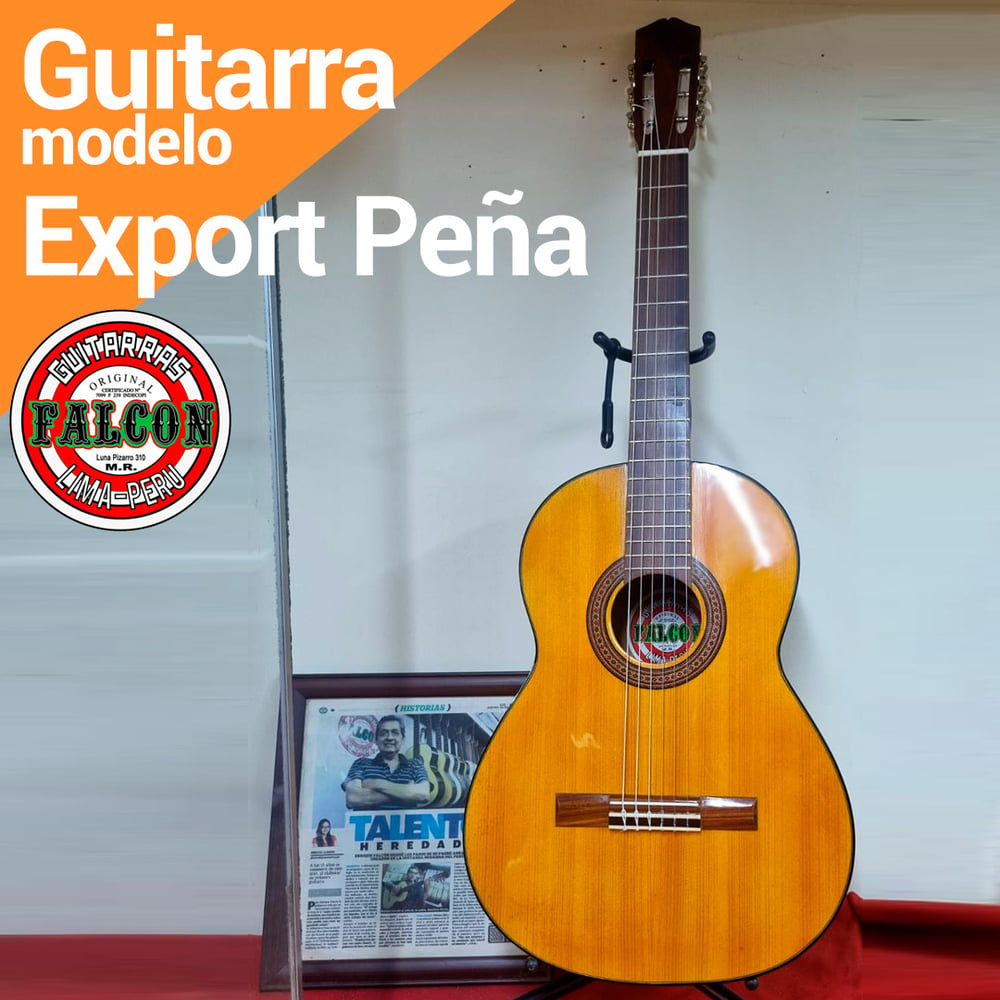
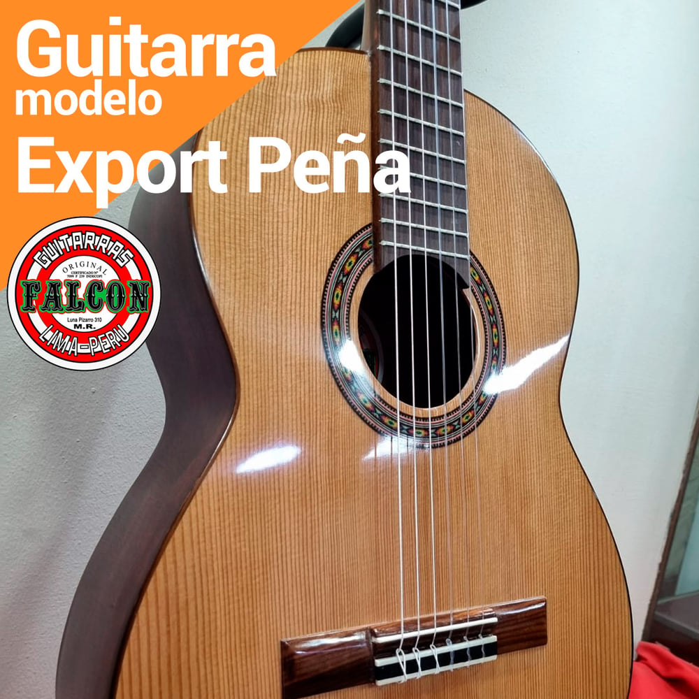
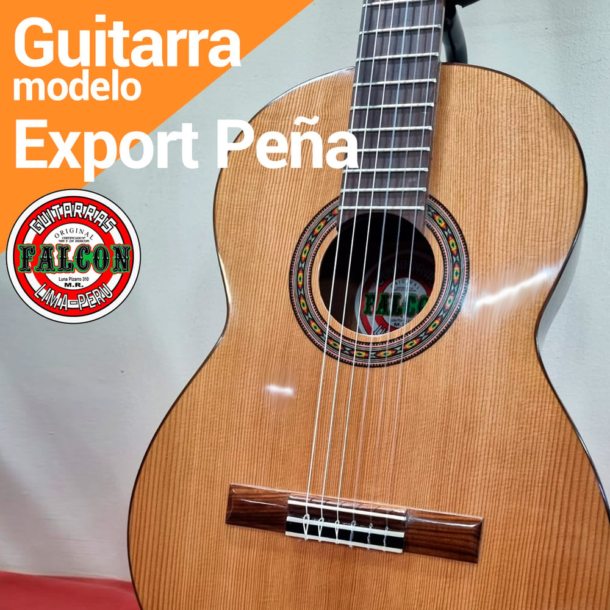
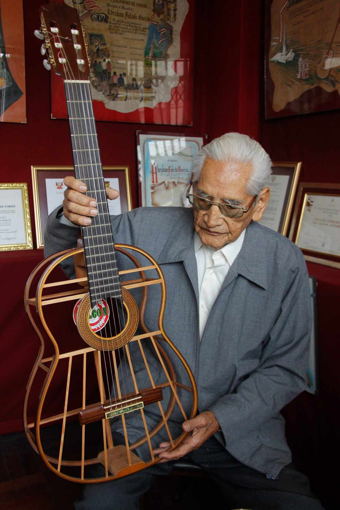

Selección de maderas
Se eligen las maderas según el modelo y el sonido buscado, con el criterio que la familia ha refinado por tres generaciones.
Catálogo
Estudio, Export Peña y Semi-Profesional. Las tres nacen en el mismo taller de Luna Pizarro y comparten la estructura Falcón patentada: barra armónica central y espinetas en abanico.
Línea de entrada
La puerta de entrada al sonido Falcón. Ideal para estudiantes, aficionados y todo el que quiera una guitarra honesta, cómoda y con carácter desde el primer acorde.

Estudio
Producto destacadoLa más pedida
Diseñada para la peña y la jarana: proyección fuerte, armazón resistente y ese sonido penetrante que pidió don Abraham para la música criolla.
Alta gama
Para el músico que ya sabe lo que busca: maderas seleccionadas, equilibrio tonal y la proyección del modelo peruano de concierto.

Semi-ProfesionalLo que comparten las tres
Espinetas colocadas en forma de abanico que parten de la barra armónica central y concluyen en las cintas de amarre, encoladas al tablero armónico. Una disposición sin antecedentes desde Torres Jurado (1820).

Oficio
Cuatro etapas. Meses de trabajo. Un solo instrumento.
Se eligen las maderas según el modelo y el sonido buscado, con el criterio que la familia ha refinado por tres generaciones.
Se arma el tablero con la barra armónica central y las espinetas en abanico, la innovación patentada que define el instrumento.
El cuello, el diapasón y el cuerpo se unen con precisión de luthier, buscando comodidad y estabilidad a lo largo de los años.
Don Abraham afinaba a la perfección sin tocar. Ese oído se mantiene: cada guitarra se revisa y se entrega lista para sonar.
¿Cuál es la tuya?
Cuéntanos para qué la necesitas —estudio, peña o concierto— y te recomendamos la guitarra Falcón adecuada. Sin compromiso.